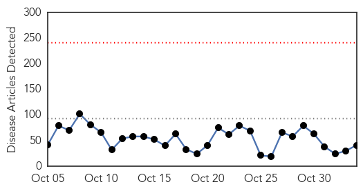
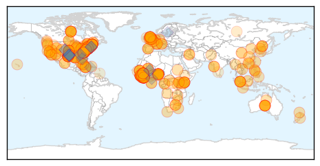
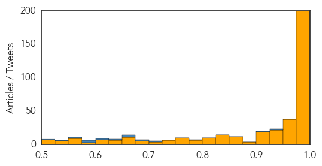

Unknown
30-Day Web Trend
0 alerts, 0 warnings

30-Day Twitter Trend
3 alerts, 0 warnings

Article Locations

Article Confidences

Top Articles:
- 0.996
- WTOC-TV: Savannah, Beaufort, SC, News, Weather & Sports
- 0.988
- Parents keen to move out of diphtheria-hit Alwar villages
- 0.983
- The Post
- 0.979
- Google Flu Trends Adopts New Model
- 0.976
- Centers for Disease Control raises travel alert for Jiangsu following H7N9 flu case
- 0.951
- Flu Season: Get Vaccinated Now to Ensure Protection
- 0.935
- Health care workers urge students to get flu shots
- 0.929
- Kansas confirms first case of flu
- 0.915
- Florida mother claims daughter paralyzed by flu shot
- 0.910
- The world windows to Thailand
- 0.870
- Did the flu shot leave a 10-year-old girl paralyzed? That’s what her mother claims
- 0.866
- Ebola crisis highlights China's philanthropic shortfall
- 0.866
- Market blast kills 10 in Nigeria's Yobe
- 0.866
- Russia says east Ukraine rebel leaders have "mandate" to negotiate with Kiev- agency
- 0.866
- Pro-Russian separatist Zakharchenko wins Ukraine rebel vote -organisers
- 0.860
- More children die in Central Darfur refugee camp - Sudan
- 0.843
- Does Your Cold Sore Mean You'll Get Alzheimer's Disease?
- 0.710
- Rising Temperatures Could Stall the Fight Against Disease
- 0.702
- This Week@WesternU, Nov. 3-7, 2014 (Western University of Health Sciences)
- 0.657
- New Test For Major Cause Of Preventable Blindness In Africa
- 0.637
- Google adds ‘real’ big data to improve Flu Trends’ accuracy
- 0.625
- Gastro epidemic strikes 1,700 in Dombivli village, polluted water blamed
- 0.623
- Laser Gum Surgery for the Treatment of Gum Disease is Now Available for Palm Beach and South Florida Residents, through Dr. Herbert Salisbury
- 0.604
- Onchocerciasis test tailored for use in the remote, low-resource settings now available
- 0.590
- Accelerating Global Progress Towards Eliminating Onchocerciasis -
- 0.567
- Call for people to take care
- 0.551
- Kootenai Health employees could be fired over flu shot
- 0.545
- Video: Kurdish unity rekindles hope for Kobane
- 0.545
- Ukraine to ‘re-examine’ peace plan with rebels
- 0.545
- Merkel warns UK against not remaining ‘committed’ to EU rules
- 0.545
- Live: Hollande addresses Canada's parliament on trade mission
- 0.545
- Battle erupts for port in Libya's Benghazi
- 0.545
- More than 100 inmates at large after Nigerian prison break
- 0.545
- France, Canada stand side by side in terror fight, says Hollande
- 0.545
- Civilian could soon lead unity government in Burkina Faso
- 0.545
- African Union gives Burkina Faso two weeks to end military rule
- 0.535
- Groups give mixed grades to Lee Memorial hospitals
- 0.533
- Aripiprazole Once-Monthly Injectable Shows Superior Effectiveness to Paliperidone Palmitate Once-Monthly Injectable on Quality of Life Scale in Patients with Schizophrenia
- 0.524
- New Malaria Vaccine Shows Promise in Kenya - World
- 0.515
- Florida mom says flu shot may have paralyzed her daughter - KLTV.com-Tyler, Longview, Jacksonville, Texas
- 0.514
- Website provides list of flu shot vaccination locations
Top Tweets:
- 0.758
- RT: Ya en cancion q busca contribuir con la erradicación del virus.Sobre él hablamos con…
- 0.546
- Las últimas palabras de Brittany Maynard antes de morir: La joven de 29 años se despidió en Facebook antes de ... http://t.co/ovBWOtU38u
- 0.520
- ayy siiii , aunque yo no estaba de bibi , yo estaba como de "zippiecup" 😂
Ebola
30-Day Web Trend
16 alerts, 9 warnings

30-Day Twitter Trend
3 alerts, 15 warnings

Article Locations
Article Confidences
Top Articles:
- 1.000
- Canada Suspends Visas for Residents and Travelers From Ebola Outbreak Countries
- 1.000
- State of Maine, nurse reach settlement on Ebola case
- 1.000
- Nurse, Maine settle Ebola quarantine suit
- 1.000
- UN employee taken to hospital in France with Ebola diagnosis
- 1.000
- Ebola: health fears stop British journalist from hosting awards
- 1.000
- Prepared for Ebola: Hospital adopts plan for pandemic
- 1.000
- U.S. nurse, Maine settle Ebola quarantine suit
- 1.000
- NY Doctor Improves; Oregon Patient Now 'Low Risk'
- 1.000
- Duke University patient tests negative for Ebola, remains in isolation
- 1.000
- Sierra Leone says another doctor dies of Ebola
- 1.000
- Ebola: Fifth doctor has deadly virus in Sierra Leone
- 1.000
- Fifth Sierra Leone Doctor Dies After Treating Patients
- 1.000
- Nurse, Maine settle Ebola quarantine suit
- 1.000
- Mass Ebola outbreak 'is unlikely' - Headlines, features, photo and videos from ecns.cn
- 1.000
- Sierra Leone loses fifth doctor to Ebola
- 1.000
- 'Ebola' patient at London hospital tests negative for virus
- 1.000
- 'Ebola' patient at London hospital tests negative for virus
- 1.000
- Ebola tops agenda at WHO African leaders meeting
- 1.000
- Doctor dies of Ebola
- 1.000
- Canada is latest country to ban entry from Ebola hot spots
- 1.000
- 'Ebola' Patient Might Be On Campus For Study [Report]
- 1.000
- Another Sierra Leone doctor tests positive for Ebola; France treating UN patient
- 1.000
- Ebola: London woman tests negative
- 1.000
- Vietnamese patient suspected of Ebola has only malaria
- 1.000
- Court Rules Against Quarantine Of Hickox Representing A Victory For Science And Civil Liberties – The Moderate Voice
- 1.000
- Vermonter voluntarily quarantined after trip to West Africa
- 1.000
- PH, Taiwan bracing for Ebola
- 1.000
- AU to engage private sector in fighting Ebola
- 0.999
- NC man awaits results of second Ebola test
- 0.999
- UNICEF doubles staff to fight Ebola in West Africa
- 0.999
- UNICEF to boost staff in Ebola-hit countries; UN health chief deplores lagging vaccine research
- 0.999
- In Sierra Leone, vaccinations another casualty of Ebola
- 0.999
- Parliament: Singapore to impose visa requirements on 3 countries with Ebola spread, Singapore News & Top Stories
- 0.999
- Ebola train of events is embarrassing
- 0.999
- UNICEF to boost staff in Ebola-hit countries; UN health chief deplores lagging vaccine research
- 0.999
- Ebola survivors need to practice safe sex
- 0.999
- U.S. Ebola nurse, Maine settle quarantine suit; patient in isolation at Duke
- 0.999
- WHO Condemns Lack Of Ebola Research For Poorer Populations
- 0.999
- Kaci Hickox, Maine Settle Quarantine Suit
- 0.999
- Coverage of Ebola warrants asking, 'which lives matter?'
- 0.999
- Ebola in Sierra Leone 'spreading 9 x faster than 2 months ago', campaigners warn
- 0.999
- Nationals from Ebola-hit West African countries need visa to enter Singapore from Nov 5, Government & Economy
- 0.999
- This Map Offers A New Perspective On Ebola Crisis In Africa
- 0.999
- Ebola nurse, Maine settle quarantine suit
- 0.999
- This Map Shows You Every Ebola Outbreak in History
- 0.999
- Ebola appeal raises £10m in 5 days — RT UK
- 0.999
- U.S. nurse, Maine settle Ebola quarantine suit
- 0.999
- Ebola’s nasty surprise
- 0.999
- China goes ahead with its anti-Ebola aid --China Economic Net
- 0.999
- UPDATE 1-WHO says currently no Ebola cases in Mali, 39 contacts sought
Showing top 50 articles...
Top Tweets:
- 0.948
- Ebola Kills Sierra Leone Doctor, UN Doubles Staff. http://t.co/d0zXlYYgIs
- 0.932
- RT: Inbound travelers from countries w/ widespread Ebola now get Check & Report Ebola (CARE) Kits on arrival. @cdctravel h…
- 0.918
- 'Ebola' patient at London hospital tests negative for virus. http://t.co/gPROzGArVk
- 0.901
- RT: Ebola Q & A with infectious disease experts Smith and Racaniello http://t.c…
- 0.883
- RT: Ebola widespread in Guinea, Liberia and Sierra Leone. Latest update: 13703 cases, 4920 deaths http://t.co/qzdWE208dL http://t…
- 0.882
- 10 Things That Kill the Ebola Virus. http://t.co/gsW3XGphkz
- 0.870
- Ebola : la génétique serait déterminante dans la résistance au virus: http://t.co/7c3ndbw7xs
- 0.841
- Regional ETU status to Ebola outbreak in West Africa http://t.co/nBAsCut6DU via ElbowOutEbola
- 0.841
- Ebola : les Etats-Unis optimistes sur la possibilité de vaincre l’épidémie: http://t.co/UCv2PgTS8w
- 0.839
- Sierra Leone loses fifth doctor to Ebola http://t.co/QO10jvgntQ
- 0.830
- hey Bobby Joe Ebola I see that you are tweeting Ebola, check out http://t.co/U0M8jd1ElC for up to the minute Ebola info.
- 0.812
- Ebola: woman with fever being tested at London hospital. http://t.co/RNf3F1bnjd
- 0.811
- hey UW Public Health I see that you are tweeting Ebola, check out http://t.co/U0M8jd1ElC for up to the minute Ebola info.
- 0.811
- hey UW Public Health I see that you are tweeting Ebola, check out http://t.co/U0M8jd1ElC for up to the minute Ebola info.
- 0.794
- RT: Without partners to run Ebola care facilities, the Ebola crisis will not end and people will continue to die unnecessarily. …
- 0.781
- hey Medical Health News I see that you are tweeting Ebola, check out http://t.co/U0M8jd1ElC for up to the minute Ebola info.
- 0.781
- hey Medical Health News I see that you are tweeting Ebola, check out http://t.co/U0M8jd1ElC for up to the minute Ebola info.
- 0.769
- RT: AfricaStopEbola Des artistes se mobilisent contre le virus Ebola @AfricaStopEbola... http://t.co…
- 0.764
- hey Reporting on Health I see that you are tweeting Ebola, check out http://t.co/U0M8jd1ElC for up to the minute Ebola inf
- 0.764
- hey Reporting on Health I see that you are tweeting Ebola, check out http://t.co/U0M8jd1ElC for up to the minute Ebola inf
- 0.752
- UNICEF Sierra Leone Ebola SitRep, 29 October 2014 http://t.co/b8MT1L7Hit
- 0.749
- RT: In Ganta, Liberia, the Ebola outbreak appears to rise and fall every few weeks. http://t.co/avvsebYf2I
- 0.748
- 'Post-Ebola Syndrome' persists after virus is cured, doctor says http://t.co/4mm7STj1aZ TackleEbola
- 0.748
- 'Post-Ebola Syndrome' Persists After Virus Is Cured, Doctor Says. http://t.co/Edp3T40NWg
- 0.746
- AFD Blog `Sierra Leone Reports 5th Doctor To Succumb To Ebola' http://t.co/LWWCuZaJFT
- 0.738
- Duke Hospital patient tests negative for Ebola. http://t.co/htNP7DF5OX
- 0.724
- RT: Sierra Leone MOH Ebola Update Nov 1-3; 216 new Conf. Cases & 56 new Susp; 21 new Conf. Deaths http://t.co/3AIv4bQxCl
- 0.714
- RT: Ebola in Sierra Leone 'spreading quickly' http://t.co/5iA2TtTCZM That success in Liberia is a mystery to authorities is …
- 0.702
- Canada is investing additional $23.5 mil on Ebola vaccines and drugs, says. And donated PPE has arrived in West Africa.
- 0.699
- N.C. officials await Ebola results on potential patient http://t.co/gHRqeAS8kN
- 0.695
- UN Health Worker Flown to France for Ebola Treatment. http://t.co/IvULLlNFYb
- 0.689
- hey web LGBT I see that you are tweeting Ebola, check out http://t.co/U0M8jd1ElC for up to the minute Ebola info.
- 0.687
- Map: The Africa without Ebola. http://t.co/tkCFk1Jmm9
- 0.686
- Multimedia journalist Ricci Shryock on reporting Ebola in Sierra Leone http://t.co/bww67rDwAP
- 0.680
- Currently there has been no report of dog to human transmission or showing symptoms of Ebola
- 0.675
- hey UW Global Health I see that you are tweeting Ebola, check out http://t.co/U0M8jd1ElC for up to the minute Ebola info.
- 0.675
- hey UW Global Health I see that you are tweeting Ebola, check out http://t.co/U0M8jd1ElC for up to the minute Ebola info.
- 0.672
- RT: A woman with a fever is being tested for Ebola at St George's Hospital in Tooting, London c4news
- 0.671
- Ebola nurse, Maine settle quarantine suit. http://t.co/kkN3mLPvtm
- 0.667
- Nurse, Maine Reach Ebola Quarantine Settlement. http://t.co/g67PULEQXj
- 0.666
- hey Theneeds Read I see that you are tweeting Ebola, check out http://t.co/U0M8jd1ElC for up to the minute Ebola info.
- 0.666
- hey Theneeds Read I see that you are tweeting Ebola, check out http://t.co/U0M8jd1ElC for up to the minute Ebola info.
- 0.663
- hey Medical Emperor , I see that you are tweeting Ebola, check out http://t.co/U0M8jd1ElC for up to the minute Ebola info.
- 0.658
- Le Canada a pris la décision de ne plus délivrer de visa aux ressortissants des pays les plus touchés par le virus Ebola.
- 0.655
- Maine & Kaci Hickox settle Ebola quarantine suit. She can move freely; must monitor health & report symptoms if any. http://t.co/jSk7GzlCW1
- 0.648
- hey Health Issues Now I see that you are tweeting Ebola, check out http://t.co/U0M8jd1ElC for up to the minute Ebola info.
- 0.648
- hey Health Issues Now I see that you are tweeting Ebola, check out http://t.co/U0M8jd1ElC for up to the minute Ebola info.
- 0.648
- hey Health Issues Now I see that you are tweeting Ebola, check out http://t.co/U0M8jd1ElC for up to the minute Ebola info.
- 0.648
- hey Health Issues Now I see that you are tweeting Ebola, check out http://t.co/U0M8jd1ElC for up to the minute Ebola info.
- 0.648
- hey Health Issues Now I see that you are tweeting Ebola, check out http://t.co/U0M8jd1ElC for up to the minute Ebola info.
Showing top 50 tweets...